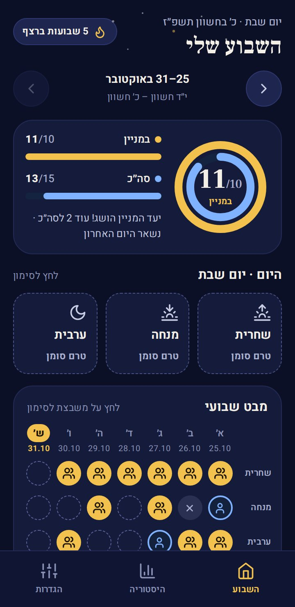
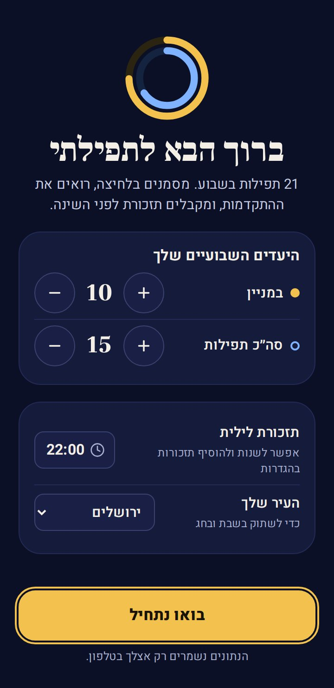
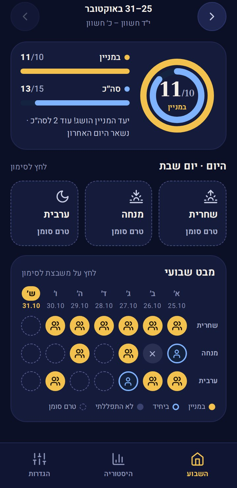
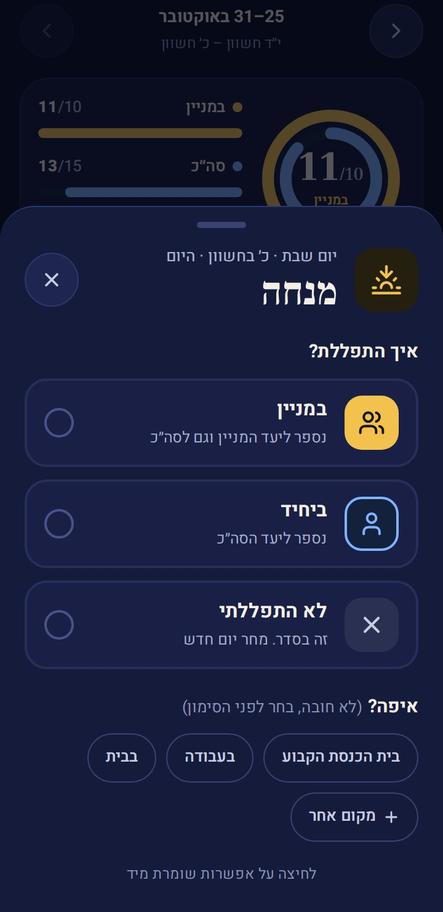
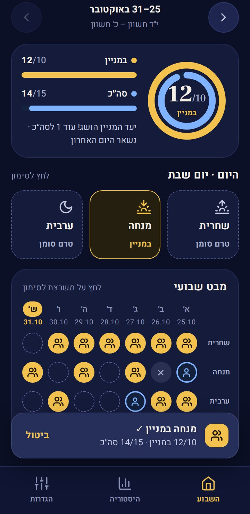
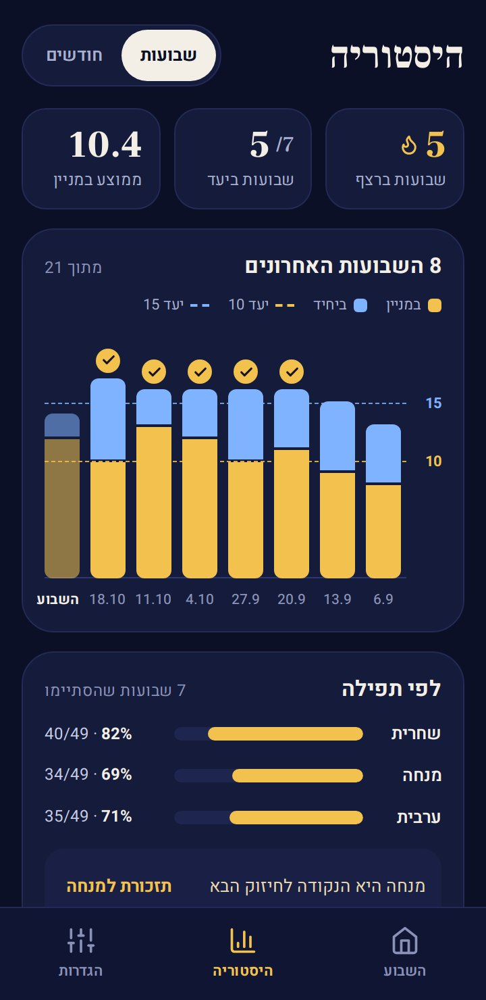
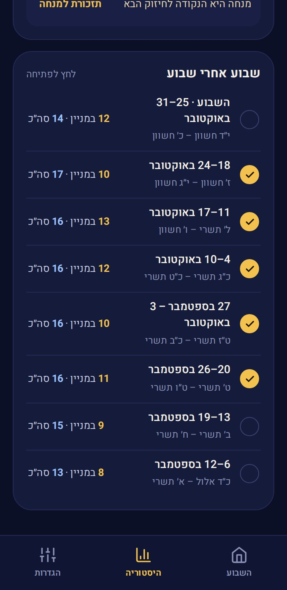
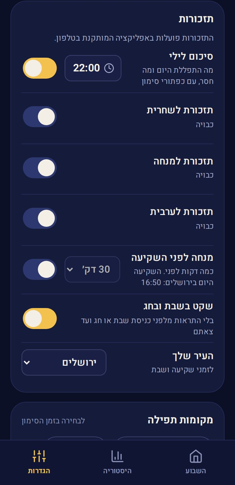
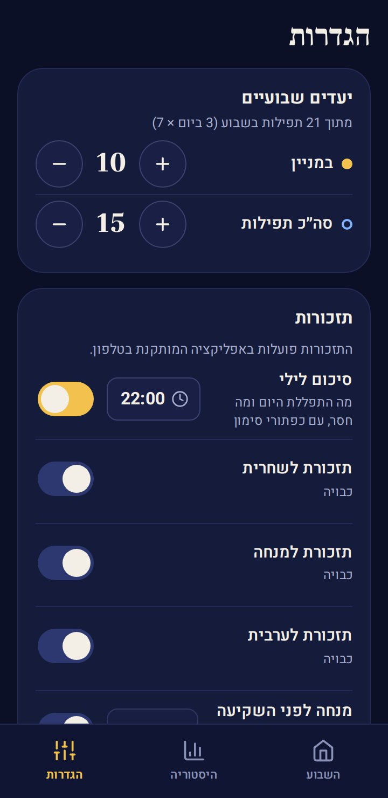
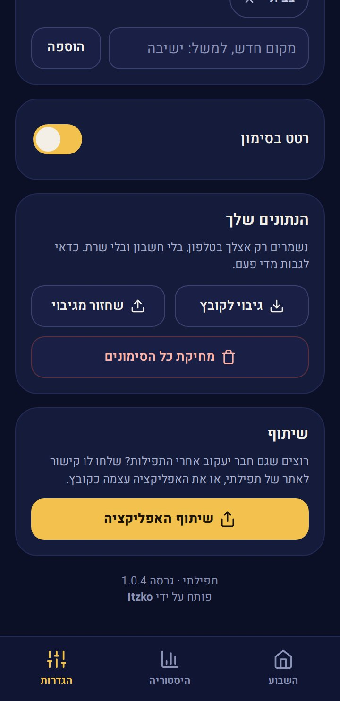

תפילתי
מעקב שבועי אחרי התפילות21 תפילות בשבוע. מסמנים כל תפילה בלחיצה, במניין או ביחיד, רואים כמה חסר ליעד השבועי, ומקבלים תזכורת לפני השינה. בשבת ובחג היא שותקת.
רוצים להציץ לפני שמתקינים? לנסות בדפדפן, עם שבועות לדוגמה ←
מה חדש
גרסה 1.0.4- חדש: שיתוף האפליקציה עם חברים (הגדרות ← שיתוף האפליקציה): הודעה קצרה עם קישור לאתר, או האפליקציה עצמה כקובץ בבלוטות', בוואטסאפ או במנהל הקבצים, גם בלי אינטרנט
- לתפילתי יש עכשיו אתר עם הסבר לכל כפתור והורדה: luach-sport.github.io/tfilati
- בתחתית ההגדרות: פותח על ידי Itzko
עובדת לגמרי בלי אינטרנט
- כל הסימונים, היעדים, ההיסטוריה והגרפים נשמרים ומחושבים בטלפון. אין שרת ואין חשבון.
- זמני השקיעה, כניסת השבת וצאתה מחושבים בטלפון לפי העיר שבחרתם.
- התזכורות מתוזמנות בטלפון לשבועיים קדימה, ולכן מגיעות גם כשהאפליקציה סגורה ובלי אינטרנט.
- שליחת האפליקציה לחבר כקובץ (בבלוטות' או במנהל הקבצים) עובדת גם היא בלי אינטרנט.
שום מידע לא יוצא מהטלפון. אינטרנט צריך רק כדי להוריד את האפליקציה או גרסה חדשה שלה.
התקנה
- מורידים
לוחצים "הורדה לאנדרואיד" למעלה. הקובץ tfilati.apk יורד לטלפון.
- מתקינים
פותחים את הקובץ מההתראות או מתיקיית ההורדות. בפעם הראשונה מאשרים "התקנה ממקור לא ידוע".
- בוחרים יעדים
במסך הפתיחה קובעים כמה במניין וכמה בסך הכול בשבוע, שעת תזכורת לילית ועיר, ולוחצים "בואו נתחיל".
אם מופיעה אזהרה של Google Play Protect על אפליקציה לא מוכרת, בוחרים להתקין בכל זאת. זה קורה בכל אפליקציה שלא הורדה מחנות Google Play. אם התזכורות לא מגיעות: הגדרות הטלפון ← אפליקציות ← תפילתי ← סוללה ← "ללא הגבלה".
ברוך הבא לתפילתי
מסך אחד, וכבר אפשר לסמן.
- היעדים השבועייםכמה תפילות במניין (ברירת המחדל 10) וכמה בסך הכול (15), מתוך 21 בשבוע. בפלוס ובמינוס.
- תזכורת ליליתבאיזו שעה לקבל סיכום של מה שהתפללתם היום ומה חסר. אפשר לשנות ולהוסיף תזכורות אחר כך בהגדרות.
- העיר שלךכדי שהתזכורות ישתקו בשבת ובחג, ולזמן השקיעה של תזכורת המנחה.
- בואו נתחילפותח את מסך השבוע, והטלפון מבקש רשות לשלוח התראות.

השבוע שלי
כמה התפללתם השבוע, כמה חסר ליעד, ומה נשאר היום.
- הרצף למעלהכמה שבועות ברצף עמדתם ביעד, עם להבה.
- החיצים והתאריכיםמעבר לשבוע קודם (התאריך הלועזי והעברי), ו"חזרה לשבוע הנוכחי".
- הטבעותהטבעת הזהובה: במניין מתוך היעד. הטבעת הכחולה: בסך הכול. לידן פסים עם המספרים ומשפט קצר: כמה עוד חסר וכמה ימים נשארו.
- השבוע שעברבתחילת שבוע מופיע סיכום של השבוע הקודם. ה־✕ סוגר אותו.
- היוםשלוש משבצות: שחרית, מנחה וערבית. לחיצה פותחת את הסימון.
- מבט שבועיטבלה של כל השבוע: זהוב במניין, כחול ביחיד, ✕ לא התפללתי. לחיצה על כל משבצת, גם של יום שעבר, מסמנת או מתקנת.

סימון תפילה
לחיצה על אפשרות שומרת מיד. אין כפתור "שמירה".
- במנייןנספר ליעד המניין וגם לסך הכול.
- ביחידנספר ליעד הסך הכול.
- לא התפללתינרשם, כדי שהיום לא יישאר פתוח. מחר יום חדש.
- איפה?לא חובה: בוחרים מקום (בית הכנסת הקבוע, בעבודה…) או "מקום אחר". בוחרים לפני הסימון.
- הסרת הסימוןמחזיר את התפילה ל"טרם סומן".
- ביטולאחרי כל סימון מופיעה הודעה קצרה עם ההתקדמות ("4/10 במניין") וכפתור ביטול.


יישר כוח!
כשמגיעים ליעד השבועי, קופץ מסך חגיגי ("יישר כוח!", "חזק וברוך!") עם מדליה, קונפטי ומאמר חז״ל.
- המדליהכמה התפללתם במניין או בסך הכול, מתוך היעד, וכמה חסר ליעד השני.
- שיתוףשולח הודעה קצרה על ההישג, למשל לחברותא.
- ברכות קטנותגם על יום מלא (3 מתוך 3) ועל חצי הדרך ליעד המניין.
היסטוריה
איך הולך לאורך זמן.
- שבועות / חודשיםמחליף בין גרף שבועי לגרף חודשי.
- שלושת המספריםשבועות ברצף, כמה שבועות ביעד, וממוצע במניין.
- לפי תפילהכמה מכל תפילה הייתה במניין, ואיזו היא הנקודה לחיזוק הבא, עם קיצור לתזכורת שלה.
- איפה התפללתהמקומות שבחרתם בזמן הסימון.
- שבוע אחרי שבוערשימת השבועות. לחיצה פותחת את השבוע במסך הראשי, ושם אפשר לתקן.


תזכורות
תזכורת מגיעה רק אם התפילה עוד לא סומנה, ואפשר לסמן ישר ממנה.
- סיכום ליליבשעה שבוחרים: מה התפללתם היום ומה עוד לא סומן, עם ההתקדמות של השבוע.
- תזכורת לכל תפילהכמה שעות ביום לכל תפילה ("+ שעה"), וה־✕ מוחק שעה. נשלחת רק אם עוד לא סימנתם.
- מנחה לפני השקיעהכמה דקות לפני השקיעה בעיר שלכם. רואים גם באיזו שעה השקיעה היום.
- במניין / ביחידכפתורים בתוך ההתראה: מסמנים בלי לפתוח את האפליקציה.
- שקט בשבת ובחגאין התראות מלפני כניסת שבת או חג ועד צאתם, לפי העיר.
- גם בלי אינטרנטהתזכורות מתוזמנות בטלפון לשבועיים קדימה, ולכן מגיעות גם כשהאפליקציה סגורה.
- התראת ניסיוןשולחת התראה עכשיו, כדי לבדוק שהכל עובד.

הגדרות
היעדים, התזכורות, המקומות והגיבוי.
- יעדים שבועייםכמה במניין וכמה בסך הכול, מתוך 21.
- תזכורותכל מה שקשור לתזכורות, והעיר לזמני השקיעה והשבת.
- מקומות תפילההרשימה שמופיעה בזמן הסימון. מוסיפים מקום חדש או מוחקים עם ה־✕.
- רטט בסימוןרטט קצר בכל סימון.
- גיבוי לקובץכל הסימונים וההגדרות בקובץ אחד, לשמירה בדרייב, בוואטסאפ לעצמכם או במחשב.
- שחזור מגיבויבטלפון חדש, או כדי להחזיר סימונים מקובץ.
- מחיקת כל הסימוניםמתחילים מחדש, אחרי אישור.
- שיתוף האפליקציהלשלוח לחברים. שיתוף עם חברים


גרסה חדשה
כשיוצאת גרסה חדשה, היא מופיעה כאן באתר, ב"מה חדש" למעלה.
- איך מעדכניםלוחצים "הורדה לאנדרואיד" למעלה ומתקינים את הקובץ מעל האפליקציה הקיימת.
- הנתונים נשמריםכל הסימונים, היעדים וההגדרות נשארים בדיוק כמו שהיו.
- איזו גרסה אצליהגדרות ← בתחתית המסך
פותח על ידי Itzko
תפילתי היא אפליקציה עצמאית של Itzko: בלי פרסומות, בלי הרשמה ובלי אינטרנט. כל הסימונים נשארים רק אצלכם בטלפון.